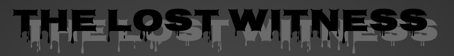

The instructions of this project were to create a movie webpage with my partner and using my skills of basic CSS and HTML to create a website trailer or showcase of the movie The purpose of this project is to make it so that we could implement our learning on basic html and css to this new project. This project also is important because it teaches students how to organize and plan out work before fully developing the final project aswell as using teamwork to help in acomplishing a diffucult task.
I first needed to create a plan.md file to plan out the content of the movie, planning out the different elements, properties, and selectiors and who would do what parts for the project.
Next, I needed to implement the plannings I had for my HTML and CSS and place it onto my code.
I needed to use specific css and html elements, properties and, selectors in order to get full credit. Some of the requierments were to include margin and padding properties, including one form element EX: radio buttons, using, using 2 selectors such as id, and class selectors, and I needed to include some paragraphs and headings in my code.
Another part of the rubric was that we needed to make sure that our images are creative common license
lastly I needed to complete a form to submit all of my work and get a final grade.
Me and my partner decided the name of the movie would be called The Lost Witness. We had more of a inspiration towards the movie mazerunner. The movie is basically an action/horror/triller in which the main character tries to escape a maze with the help of other people named maze runners and they are able to escape not realizing that they have more obstacles to overcome. We decided to evenly split out the tasks we were doing. So my partner and I did parts of CSS I did the plan.md section and the html were also evenly done.
I was struggling with making the radio buttons so that only one could be clicked.
At first I tried to change the name="" attribute to name="data" so that the radio buttons inside the label tags could only click one radio button at a time but that didnt work
So... I checked my radio elements in my html and I realized that there was alot of spelling errors in my id attributes.
One of my id attributes instead of being shown as label for= "great" it was accidentally changed to label for= "grat" which made only a few of the radio buttons to be selected
I quickly made sure to change all my form elements and tags so that the buttons could be clicked on seperately and it worked!
<label for="grat">
<p><input id="great" value="great" type="radio" name="data">great</p>
</label>
<label for="cool">>
<p><input id="cool" value="cool" type="radio" name="data"<cool>/p>
</label>
<label for="bad">>
<p><input id="bad" value="bad" type="radio" name="data">bad</p>
</label>
<label for="great">
<p><input id="great" value="great" type="radio" name="data">great</p>
</label>
<label for="cool">>
<p><input id="cool" value="cool" type="radio" name="data"<cool>/p>
</label>
<label for="bad">>
<p><input id="bad" value="bad" type="radio" name="data">bad</p>
</label>
as one of the requirements I needed to include margin and padding properties in order for me and my partner to get
full credit. The difference between margin and padding is that margin is used for the amount of space that surrounds different elements
while padding is used to space out the distance inside the border and its element.
I was trying add the margin and padding properties to the images but the formation of the images werent
as exact as I wanted it to be. So I kept using different values trying to find a solution to the problem but nothing worked.
Then I realized something. The margin and padding can also be written in clockwise notation. How clockwise notation works
is that 4 values can be used that can change the space of all four sides of margin and padding elements. So instead of margin and paddings
being written in the form of one value, multiple values can be used to change multiple sides of a margin and property value
So, using this knowledge I made it so that the margin and padding properties were written in four different values
allowing me to center all the images and I ended up with a final result I was proud of.
.cube {
margin: 80px;
padding: 5px;
}
.cube {
margin: 10px 80px 10px 80px;
padding: 5px;
}
this project taught me the importance of always double checking and organizing your work before you end up submitting. If I didnt take the time to check over the spelling errors that I had made for the different id elements then I would have never been able to solve the problem within the html
This project also taught me that at times its better to look for another way to solve a problem rather going through the process of trial and error. Next time I could try looking over notes or getting help from my partner in order to figure out a solution rather than just continuesly putting different values in my margin and padding properties hoping to see a different result.
The next thing I should try doing is organizing different parts of the website and checking for any spelling errors that would make the code out of place. I also should try changing the way the images are centered and maybe adding more style to the images and borders. I also feel like there should be more color to the images instead of there being only black and gray borders and text. Overall, I feel proud for the final result of the website and my partner and I worked together well and met all the requirements.
